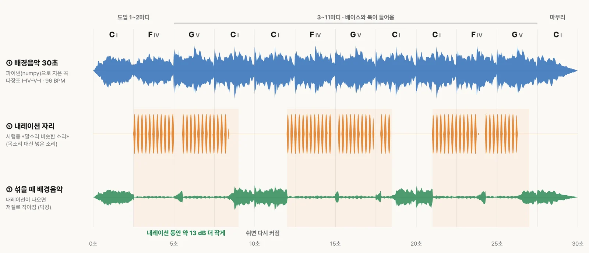

내레이션과 배경음악 넣기
컴퓨터에 들어 있는 음성으로 내레이션을 만들고, 파이썬으로 배경음악을 지어, 내레이션이 나올 때 배경음악이 저절로 작아지도록 영상에 섞습니다. 모두 무료입니다.
- 목표
- 소리 없는 30초 안팎의 영상에 내레이션과 배경음악을 넣는다 (예시: 중학교 음악 «주요 3화음» — 으뜸·버금딸림·딸림화음만으로 지은 배경음악과 그 원리를 소개하는 내레이션)
- 준비물
- 소리 없는 영상의 복사본(14·15차시 결과물이나 내 영상)과
대본.txt를 넣은17차시폴더, FFmpeg (14차시 4단계에서 점검), 파이썬 - 결과물
내레이션.wav·배경음악.wav와 지은 코드bgm.py· 소리를 넣은주요3화음_안내.mp4- 주의
- 다른 사람 목소리 복제 금지(본인 목소리만) · 저작권 있는 음악 쓰지 않기 · 운영체제의 한국어 음성은 컴퓨터마다 다름
같은 영상이라도 목소리와 음악이 들어가면 학생의 집중이 달라집니다. 녹음 장비 없이도 윈도우와 맥에 들어 있는 음성 합성으로 내레이션을 만들 수 있고, 배경음악은 저작권 걱정 없이 파이썬 코드로 직접 지을 수 있습니다. 핵심은 둘입니다. 대본과 «내레이션 아래에서 배경음악은 얼마나 작게»라는 음량 기준을 먼저 정하는 것, 그리고 섞은 뒤 이어폰과 교실 스피커로 직접 들어 보는 것입니다.
먼저 볼 영상
 10:45
먼저 볼 영상녹음 없이 유튜브 하는 법 - Qwen3 TTS + 클로드 코드 스킬 완전 정복하리아빠 HariFatherKR · 유튜브무료 오픈소스 Qwen3 TTS 를 클로드 코드 스킬로 묶어 녹음 없이 내레이션을 만드는 과정을 다룹니다.
10:45
먼저 볼 영상녹음 없이 유튜브 하는 법 - Qwen3 TTS + 클로드 코드 스킬 완전 정복하리아빠 HariFatherKR · 유튜브무료 오픈소스 Qwen3 TTS 를 클로드 코드 스킬로 묶어 녹음 없이 내레이션을 만드는 과정을 다룹니다.
 3:42
먼저 볼 영상클로드한테 시켜봤습니다 | 파이썬으로 BGM 만들기아낌없이 주는 두루 · 유튜브클로드에게 파이썬 코드로 배경음악을 작곡하게 한 과정을 보여 줍니다. 만든 곡과 코드를 무료로 공개했다고 안내합니다.
3:42
먼저 볼 영상클로드한테 시켜봤습니다 | 파이썬으로 BGM 만들기아낌없이 주는 두루 · 유튜브클로드에게 파이썬 코드로 배경음악을 작곡하게 한 과정을 보여 줍니다. 만든 곡과 코드를 무료로 공개했다고 안내합니다.
첫 영상의 Qwen3 TTS 는 내 컴퓨터에서 돌아가는 오픈소스 음성 합성으로, 이 차시에서는 «선택»입니다. 모델 파일이 크고 컴퓨터 성능에 따라 느릴 수 있어, 기본 실습은 운영체제에 들어 있는 음성으로 합니다.
1 준비
클로드연수안에 빈 폴더17차시를 만들고 소리 없는 영상의 복사본을 넣습니다. 영상이 없으면 14차시 예시 영상이나 15차시 예시 영상으로 연습합니다(대본은 영상에 맞게 바꿉니다).- 내레이션 대본을
대본.txt로 저장합니다. 아래는 음악 예시 대본입니다(30초 안팎). 기계 음성이 잘못 읽기 쉬운 로마 숫자(I·IV·V)는 대본에 넣지 않고 한글 이름으로 씁니다.오늘은 주요 삼화음을 알아봅니다. 다장조에서 도, 미, 솔은 으뜸화음입니다. 파, 라, 도는 버금딸림화음, 솔, 시, 레는 딸림화음입니다. 지금 흐르는 배경음악은 이 세 화음만으로 만들었습니다. 화음이 바뀌는 순간을 귀 기울여 들어 보세요.
- 운영체제에 한국어 음성이 있는지는 컴퓨터마다 다릅니다(운영체제 언어, 판, 설치한 언어·음성). 따라 하기 4단계에서 클로드가 먼저 확인합니다.
2 따라 하기
번호 순서대로 진행합니다. 프롬프트가 필요한 단계에는 바로 아래에 복사 단추가 있습니다.
- 데스크톱 앱 사이드바 맨 위의 Code 탭을 누릅니다.
- 프롬프트 상자 아래 줄의 환경 단추에서 Local 묶음의 맨 위 항목(내 컴퓨터)을 고르고, 폴더 단추의 Open folder… 로
클로드연수/17차시를 고릅니다. - 권한 모드를 Manual 로 둡니다. 명령을 실행하거나 파일을 만들기 전에 매번 묻습니다.
- 한국어 음성이 있는지 확인합니다.
이 컴퓨터에 들어 있는 음성 합성(윈도우는 Windows PowerShell 의 System.Speech, 맥은 say 명령)으로 내레이션을 만들려고 합니다. 먼저 확인만 해 주세요. 1. 내 운영체제와, 쓸 수 있는 음성 목록 2. 그중 한국어(ko-KR) 음성이 있는지, 있으면 이름 3. 한국어 음성이 없으면 내 운영체제 판에서 추가하는 방법 아직 파일은 만들지 마세요.
클로드가 실행하는 확인 명령은 아래와 같습니다. 직접 확인해 보고 싶으면 윈도우는 시작 메뉴의 Windows PowerShell, 맥은 터미널에 붙여 넣습니다. 목록에
ko-KR(맥은ko_KR)이 보이면 한국어 음성이 있는 것입니다. 윈도우 설정에서 음성을 새로 추가해도 이 방법에서는 목록에 나오지 않는 경우가 있습니다. 그럴 때는 맥에서 만들거나, 오픈소스 음성 합성(아래 «선택»)을 쓰거나, 직접 녹음합니다.# 윈도우: Windows PowerShell 에 붙여 넣기 Add-Type -AssemblyName System.Speech (New-Object System.Speech.Synthesis.SpeechSynthesizer).GetInstalledVoices() | ForEach-Object { $_.VoiceInfo.Name + " / " + $_.VoiceInfo.Culture } # 맥: 터미널에 붙여 넣기 say -v '?' | grep ko_KR캡처 넣을 곳 · L17-1
음성 확인 결과 (따라 하기 4번).- 빨간 상자: 한국어(ko-KR) 음성 이름
- 내레이션을 만듭니다.
대본.txt 를 한국어 음성으로 읽어 내레이션.wav 를 만들어 주세요. - 문장마다 따로 만든 뒤 문장 사이에 0.6초 쉼을 넣어 이어 붙이기 - 말 빠르기는 보통보다 조금 느리게 - 다 되면 문장마다 시작·끝 시각을 표로 알려 주기 (장면과 자막 맞추기에 씀)
문장마다 따로 만들면 한 문장만 고쳐 다시 만들 수 있고, 시각표로 영상의 장면과 맞추기 쉽습니다. 내레이션.wav 를 들어 보고 어색하게 읽는 낱말은 대본을 고쳐(예: «IV» → «버금딸림화음», «3화음» → «삼화음») 다시 만듭니다.
- 배경음악을 파이썬으로 짓습니다.
파이썬(numpy)으로 배경음악을 지어 배경음악.wav 로 만들어 주세요. - 길이는 영상 길이에 맞추고, 끝 2초는 서서히 작아지게 - 다장조, 주요 3화음(I 도미솔 · IV 파라도 · V 솔시레)만 쓰고 I–IV–V–I 진행을 되풀이 - 빠르기 96 BPM, 잔잔한 화음 + 톡 튀는 분산화음 + 작은 베이스와 북 - 무작위 값은 씨앗을 정해 다시 실행해도 같은 곡이 나오게 - 지은 코드는 bgm.py 로 남기고, 마디별 화음을 표로 알려 주기 numpy 가 없으면 설치해도 되는지 먼저 물어 주세요.
쓸 화음과 진행을 정해 주면 곡이 수업 내용과 이어지고, 음악 시간에는 그 자체가 자료가 됩니다. «씨앗을 정해»는 다시 실행해도 같은 곡이 나오게 하는 문장입니다. 직접 지은 곡이라 저작권 걱정이 없지만, «○○ 노래처럼»이라고 실제 곡을 흉내 내 달라고 하지는 않습니다.
- FFmpeg 로 섞습니다. 내레이션이 나올 때 배경음악이 저절로 작아지는 방법을 «덕킹»이라고 합니다.
FFmpeg 로 영상에 내레이션과 배경음악을 섞어 주세요. - 내레이션은 영상 시작 1초 뒤부터 - 배경음악은 평소에도 내레이션보다 작게, 내레이션이 나오는 동안에는 저절로 더 작아지게(덕킹) - 전체 음량은 -16 LUFS 안팎 - 결과 파일: 주요3화음_안내.mp4 (원본 영상은 그대로 두기) 다 되면 내레이션이 나올 때와 쉴 때 배경음악 크기가 몇 dB 차이 나는지 재서 알려 주세요.
캡처 넣을 곳 · L17-2
섞기 명령 승인 (따라 하기 7번).- 빨간 상자: 승인 단추
- 대화창의
주요3화음_안내.mp4경로를 눌러 이어폰으로 들어 봅니다. 고칠 점은 숫자로 말합니다. 예: «배경음악을 6 dB 더 작게», «두 번째 문장을 0.5초 늦게»캡처 넣을 곳 · L17-3
완성 영상 재생 (따라 하기 8번).- 빨간 상자: 대화창의
주요3화음_안내.mp4경로와 재생 화면
- 빨간 상자: 대화창의
먼저 볼 영상의 Qwen3 TTS, 더 보기 영상의 VoiceBox 처럼 내 컴퓨터에서 돌아가는 오픈소스 음성 합성도 있습니다. 운영체제 음성보다 자연스러울 수 있지만 모델 파일이 크고, 그래픽 카드가 없는 PC에서는 느리며, 학교 PC에서는 설치가 막힐 수 있습니다. 목소리 복제는 본인 목소리만 씁니다. 학생·동료·유명인의 목소리를 복제하지 않습니다.
부록 팁 — ElevenLabs(내레이션)·수노(노래) 같은 외부 유료 서비스도 있지만 별도 가입·요금이 들어 이 연수의 실습에서는 쓰지 않습니다.
3 결과 예시

배경음악 파일 열기 → 곡을 지은 파이썬 코드 보기 →
4 검증 포인트
② 발음 — 기계 음성은 숫자·영어·기호·로마 숫자를 엉뚱하게 읽습니다(예: «IV»). 어색한 곳은 대본을 한글로 풀어 써서 다시 만듭니다.
③ 화면과 맞춤 — 내레이션이 말하는 순간 그 장면이 화면에 나오는지 봅니다. 어긋나면 문장별 시각표로 맞춥니다.
④ 배경음악의 끝 — 영상 끝에서 음악이 뚝 끊기지 않고 서서히 작아지는지, 되풀이되는 이음새가 튀지 않는지 듣습니다.
⑤ 음악 내용 — 음악 수업에 쓴다면 «마디별 화음 표»가 실제 소리와 같은지 피아노나 앱으로 확인합니다.
⑥ 목소리와 저작권 — 본인 목소리 또는 운영체제 음성만, 음악은 직접 지은 것만 썼는지 봅니다.
⑦ 음량 — 교실 TV에서 너무 크거나 작지 않은지, 다른 영상과 비슷한 크기인지 봅니다.
5 다른 교과에 적용하기
따라 하기 6단계 프롬프트 대신 아래 교과 프롬프트를 씁니다. 영상의 성격에 맞는 배경음악 조건과 «다 만든 뒤 확인할 것»이 들어 있습니다. 4·5·7단계는 그대로 쓰고(7단계는 결과 파일 이름만 바꿈), 대본은 5단계 전에 아래 공통 프롬프트로 다듬습니다.
대본.txt 를 기계 음성이 읽기 좋게 다듬어 주세요. 1. 숫자·영어·기호(%, ℃, 로마 숫자 등)를 읽는 대로 한글로 풀어 쓴 고침안 2. 너무 긴 문장은 둘로 나누기 3. 고친 곳은 «원래 → 고침» 표로 보여 주고, 내가 허락하면 대본_읽기용.txt 로 저장 내레이션은 대본_읽기용.txt 로 만듭니다.
국어시 낭송 영상느리고 조용한 단조 화음
파이썬(numpy)으로 '시 낭송' 영상에 깔 배경음악을 지어 배경음악.wav 로 만들어 주세요. - 길이는 영상 길이에 맞추고, 끝 2초는 서서히 작아지게 - 가단조, 60 BPM, 부드러운 화음만 (북·베이스 없이) - 낭송 목소리를 가리지 않게 높은 음은 아주 작게 - 무작위 값은 씨앗을 정해 다시 실행해도 같은 곡이 나오게 - 지은 코드는 bgm.py 로 남기고, 마디별 화음을 표로 알려 주기 numpy 가 없으면 설치해도 되는지 먼저 물어 주세요. 다 만든 뒤 확인할 것 - 화음이 가단조 안의 음으로만 되어 있는지 - 갑자기 커지는 곳이 없는지
수학문제 풀이 영상생각할 시간에 어울리는 일정한 박
파이썬(numpy)으로 '수학 문제 풀이' 영상에 깔 배경음악을 지어 배경음악.wav 로 만들어 주세요. - 길이는 영상 길이에 맞추고, 끝 2초는 서서히 작아지게 - 다장조, 80 BPM, 똑딱이는 작은 박과 잔잔한 화음 - '생각해 보기' 구간(교사가 적은 시각)에는 박만 남기기 - 무작위 값은 씨앗을 정해 다시 실행해도 같은 곡이 나오게 - 지은 코드는 bgm.py 로 남기고, 마디별 화음을 표로 알려 주기 numpy 가 없으면 설치해도 되는지 먼저 물어 주세요. 다 만든 뒤 확인할 것 - 박이 일정한지 (80 BPM 이면 한 박 0.75초) - 생각해 보기 구간에서 화음이 빠졌는지
과학실험 안전 안내 영상경쾌하게, 경고 장면에서는 멈춤
파이썬(numpy)으로 '실험 안전 안내' 영상에 깔 배경음악을 지어 배경음악.wav 로 만들어 주세요. - 길이는 영상 길이에 맞추고, 끝 2초는 서서히 작아지게 - 사장조, 110 BPM, 경쾌한 분산화음 - 경고 장면 시각(교사가 적은 것)에는 1초 동안 음악을 멈추고 짧은 «딩» 소리 - 무작위 값은 씨앗을 정해 다시 실행해도 같은 곡이 나오게 - 지은 코드는 bgm.py 로 남기고, 마디별 화음을 표로 알려 주기 numpy 가 없으면 설치해도 되는지 먼저 물어 주세요. 다 만든 뒤 확인할 것 - 멈춤과 «딩» 소리가 적어 준 시각에 정확히 오는지
영어챈트 영상4박 단위로 문장을 얹기 좋은 리듬
파이썬(numpy)으로 '영어 챈트' 영상에 깔 배경음악을 지어 배경음악.wav 로 만들어 주세요. - 길이는 영상 길이에 맞추고, 끝 2초는 서서히 작아지게 - 100 BPM, 4/4박자, 북과 손뼉 소리를 또렷하게, 화음은 I–V–vi–IV 되풀이 - 2마디마다 문장 하나를 얹을 수 있게 그 첫 박에 작은 신호음 - 무작위 값은 씨앗을 정해 다시 실행해도 같은 곡이 나오게 - 지은 코드는 bgm.py 로 남기고, 마디별 화음을 표로 알려 주기 numpy 가 없으면 설치해도 되는지 먼저 물어 주세요. 다 만든 뒤 확인할 것 - 100 BPM 에서 2마디가 4.8초인지 - 신호음이 2마디마다 같은 자리에 오는지
사회세계 여러 지역 소개 영상특정 지역 음악을 흉내 내지 않는 중립적인 곡
파이썬(numpy)으로 '세계 여러 지역 소개' 영상에 깔 배경음악을 지어 배경음악.wav 로 만들어 주세요. - 길이는 영상 길이에 맞추고, 끝 2초는 서서히 작아지게 - 바장조, 90 BPM, 부드러운 화음과 베이스 - 특정 나라·민족의 음악을 흉내 내지 않기 (고정관념을 심지 않게) - 무작위 값은 씨앗을 정해 다시 실행해도 같은 곡이 나오게 - 지은 코드는 bgm.py 로 남기고, 마디별 화음을 표로 알려 주기 numpy 가 없으면 설치해도 되는지 먼저 물어 주세요. 다 만든 뒤 확인할 것 - 특정 지역을 떠올리게 하는 음계나 악기 소리가 없는지
역사연표 영상장중하고 느린 곡, 시대가 바뀌면 화음도
파이썬(numpy)으로 '역사 연표' 영상에 깔 배경음악을 지어 배경음악.wav 로 만들어 주세요. - 길이는 영상 길이에 맞추고, 끝 2초는 서서히 작아지게 - 라단조, 70 BPM, 낮은 화음과 느린 북 - 시대가 바뀌는 시각(교사가 적은 것)마다 화음이 바뀌게 - 무작위 값은 씨앗을 정해 다시 실행해도 같은 곡이 나오게 - 지은 코드는 bgm.py 로 남기고, 마디별 화음을 표로 알려 주기 numpy 가 없으면 설치해도 되는지 먼저 물어 주세요. 다 만든 뒤 확인할 것 - 화음이 바뀌는 시각이 적어 준 시각과 맞는지
도덕감사 표현 영상따뜻하고 부드러운 곡
파이썬(numpy)으로 '감사 표현하기' 영상에 깔 배경음악을 지어 배경음악.wav 로 만들어 주세요. - 길이는 영상 길이에 맞추고, 끝 2초는 서서히 작아지게 - 내림마장조, 76 BPM, 부드러운 화음과 오르골 같은 소리 - 마지막 4마디는 점점 여리게 - 무작위 값은 씨앗을 정해 다시 실행해도 같은 곡이 나오게 - 지은 코드는 bgm.py 로 남기고, 마디별 화음을 표로 알려 주기 numpy 가 없으면 설치해도 되는지 먼저 물어 주세요. 다 만든 뒤 확인할 것 - 마지막 4마디가 점점 작아지는지
기술·가정조리 순서 영상단계가 바뀔 때마다 짧은 효과음
파이썬(numpy)으로 '조리 순서 안내' 영상에 깔 배경음악을 지어 배경음악.wav 로 만들어 주세요. - 길이는 영상 길이에 맞추고, 끝 2초는 서서히 작아지게 - 다장조, 104 BPM, 가벼운 분산화음 - 단계가 바뀌는 시각(교사가 적은 것)마다 0.3초 «톡» 효과음 - 무작위 값은 씨앗을 정해 다시 실행해도 같은 곡이 나오게 - 지은 코드는 bgm.py 로 남기고, 마디별 화음을 표로 알려 주기 numpy 가 없으면 설치해도 되는지 먼저 물어 주세요. 다 만든 뒤 확인할 것 - 효과음 개수가 단계 수와 같은지
정보알고리즘 설명 영상옛날 게임기 같은 소리, 2마디 선율 되풀이
파이썬(numpy)으로 '알고리즘 설명' 영상에 깔 배경음악을 지어 배경음악.wav 로 만들어 주세요. - 길이는 영상 길이에 맞추고, 끝 2초는 서서히 작아지게 - 사각파 소리로 옛날 게임기 느낌, 120 BPM, 다장조 - 반복 구조를 설명하는 영상이니 2마디짜리 선율을 되풀이 - 무작위 값은 씨앗을 정해 다시 실행해도 같은 곡이 나오게 - 지은 코드는 bgm.py 로 남기고, 마디별 화음을 표로 알려 주기 numpy 가 없으면 설치해도 되는지 먼저 물어 주세요. 다 만든 뒤 확인할 것 - 소리가 찢어지지 않는지 (가장 큰 소리 −3 dBFS 이하)
음악장조와 단조 비교 영상같은 선율을 다장조로, 이어서 다단조로
파이썬(numpy)으로 '장조와 단조 비교' 영상에 깔 배경음악을 지어 배경음악.wav 로 만들어 주세요. - 길이는 영상 길이에 맞추고, 끝 2초는 서서히 작아지게 - 8마디 선율을 다장조로 한 번, 같은 으뜸음의 다단조로 한 번 들려주기 - 두 부분 사이에 1초 쉼 - 무작위 값은 씨앗을 정해 다시 실행해도 같은 곡이 나오게 - 지은 코드는 bgm.py 로 남기고, 마디별 화음을 표로 알려 주기 numpy 가 없으면 설치해도 되는지 먼저 물어 주세요. 다 만든 뒤 확인할 것 - 다단조 부분에서 적어도 미가 미♭ 으로 바뀌었는지 (셋째 음) - 두 부분의 선율 리듬이 같은지
미술작품 감상 영상화음이 천천히 바뀌는 잔잔한 곡
파이썬(numpy)으로 '작품 감상' 영상에 깔 배경음악을 지어 배경음악.wav 로 만들어 주세요. - 길이는 영상 길이에 맞추고, 끝 2초는 서서히 작아지게 - 다장조, 60 BPM, 한 화음을 두 마디씩 길게 - 높은 음 장식 없이 부드럽게 - 무작위 값은 씨앗을 정해 다시 실행해도 같은 곡이 나오게 - 지은 코드는 bgm.py 로 남기고, 마디별 화음을 표로 알려 주기 numpy 가 없으면 설치해도 되는지 먼저 물어 주세요. 다 만든 뒤 확인할 것 - 화음이 8초마다 바뀌는지 (60 BPM, 4/4박자 두 마디)
체육준비 운동 따라 하기 영상구령에 맞는 정확한 빠르기, 8박마다 종소리
파이썬(numpy)으로 '준비 운동 따라 하기' 영상에 깔 배경음악을 지어 배경음악.wav 로 만들어 주세요. - 길이는 영상 길이에 맞추고, 끝 2초는 서서히 작아지게 - 120 BPM, 4/4박자, 북을 또렷하게 - 8박(4초)마다 작은 종소리로 동작을 바꾸는 때를 알리기 - 무작위 값은 씨앗을 정해 다시 실행해도 같은 곡이 나오게 - 지은 코드는 bgm.py 로 남기고, 마디별 화음을 표로 알려 주기 numpy 가 없으면 설치해도 되는지 먼저 물어 주세요. 다 만든 뒤 확인할 것 - 120 BPM 에서 8박이 4초인지 - 종소리가 정확히 8박마다 나오는지
진로직업 소개 영상밝고 희망적인 곡, 직업이 바뀌면 상승 음형
파이썬(numpy)으로 '직업 소개' 영상에 깔 배경음악을 지어 배경음악.wav 로 만들어 주세요. - 길이는 영상 길이에 맞추고, 끝 2초는 서서히 작아지게 - 라장조, 100 BPM, 밝은 분산화음과 베이스 - 직업이 바뀌는 시각(교사가 적은 것)마다 짧은 상승 음형 - 무작위 값은 씨앗을 정해 다시 실행해도 같은 곡이 나오게 - 지은 코드는 bgm.py 로 남기고, 마디별 화음을 표로 알려 주기 numpy 가 없으면 설치해도 되는지 먼저 물어 주세요. 다 만든 뒤 확인할 것 - 상승 음형이 적어 준 시각에 오는지
담임학급 행사 안내 영상밝고 가벼운 곡 (글과 그림만 있는 영상)
파이썬(numpy)으로 '학급 행사 안내' 영상에 깔 배경음악을 지어 배경음악.wav 로 만들어 주세요. - 길이는 영상 길이에 맞추고, 끝 2초는 서서히 작아지게 - 사장조, 108 BPM, 밝고 가벼운 곡 - 학생 사진·이름을 넣지 않은 안내 영상용 - 무작위 값은 씨앗을 정해 다시 실행해도 같은 곡이 나오게 - 지은 코드는 bgm.py 로 남기고, 마디별 화음을 표로 알려 주기 numpy 가 없으면 설치해도 되는지 먼저 물어 주세요. 다 만든 뒤 확인할 것 - 끝이 뚝 끊기지 않고 서서히 작아지는지
소리를 넣을 때는 말이 주인공, 음악은 배경입니다. 대본을 먼저 다듬고, 배경음악이 내레이션 아래로 얼마나 내려갈지를 숫자(dB)로 정해 섞습니다. 운영체제 음성과 코드로 지은 음악은 무료이고 저작권 걱정이 없으며, 문장 하나·화음 하나만 바꿔 다시 만들 수 있습니다.
· 한국어 음성이 목록에 없다 — 클로드가 알려 주는 방법으로 운영체제에 한국어 음성을 추가해 봅니다. 그래도 안 되면 다른 컴퓨터(맥 등)에서 만들거나, 오픈소스 음성 합성(선택)을 쓰거나, 직접 녹음합니다.
· 윈도우에서 System.Speech 오류가 난다 — 새로 설치한 PowerShell 7 이 아니라 윈도우에 들어 있는 Windows PowerShell 에서 실행하게 합니다. «Windows PowerShell(powershell.exe)로 실행해 주세요»라고 요청합니다.
· 내레이션이 너무 빠르거나 딱딱하다 — «말 빠르기를 한 단계 느리게, 쉼표마다 0.3초 쉼»처럼 요청합니다.
· 배경음악이 너무 크다 — «배경음악을 6 dB 더 작게»처럼 숫자로 말합니다. 덕킹이 너무 세게 걸려 음악이 끊기는 느낌이면 «덕킹을 약하게»라고 합니다.
· numpy 설치가 막힌다 — 학교 PC는 파이썬 패키지 설치가 막힐 수 있습니다. 개인 노트북에서 배경음악.wav 를 만들어 옮깁니다.
· FFmpeg 가 없다 — 14차시 4단계로 점검합니다.
더 보기

출처: Claude Code 문서 Use Claude Code Desktop — 권한 모드(Manual), 앱 안 창에서 파일 열기 (2026-11-11 확인). 결과 예시는 파이썬 3 + numpy 2.5, FFmpeg 6.1 로 만들었습니다.